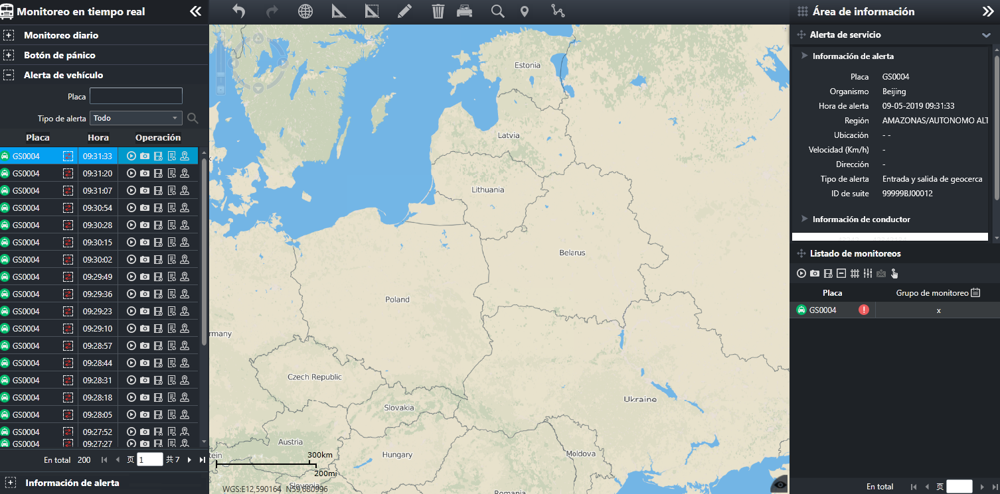

Cuando el vehículo está en proceso de marcha, si hay condiciones anormales como exceso de velocidad, cruce o desviación de
ruta, se alarma. El sistema puede realizar monitoreo de video, monitoreo de posición, registrar información de alerta y procesar
la información de la alarma.
|
• |
Alerta de exceso de velocidad: Cuando el vehículo está en proceso de marcha, se excede la velocidad preestablecida y el kit
de seguridad informa activamente al sistema de monitoreo. |
|
• |
Área de entrada / salida: el usuario establece la valla electrónica y aplica la valla electrónica al vehículo. Cuando el vehículo
que aplica valla electrónica entra o sale de la valla electrónica, la alarma se informará automáticamente. |
|
• |
Desviación de ruta: el usuario establece la ruta de conducción del vehículo y la aplica al vehículo. Cuando el vehículo no
viaja de acuerdo con la ruta preestablecida, se informa la alarma de desplazamiento de ruta. |
|
• |
Ruta de entrada y salida: el usuario establece la ruta de conducción del vehículo y la aplica al vehículo. Cuando el vehículo
entra y sale de la ruta de conducción, se informa la alarma de la ruta de entrada y salida. |
La configuración y aplicación de reglas de tráfico, tales como valla electrónica, ruta de conducción y exceso de velocidad,
se implementan en el módulo “Gestión de tráfico"
En la barra de menú de navegación izquierda, seleccione el menú principal para entrar a la interfaz principal de alerta de vehículo.

Fig 44 Interfaz principal de alerta de vehículo